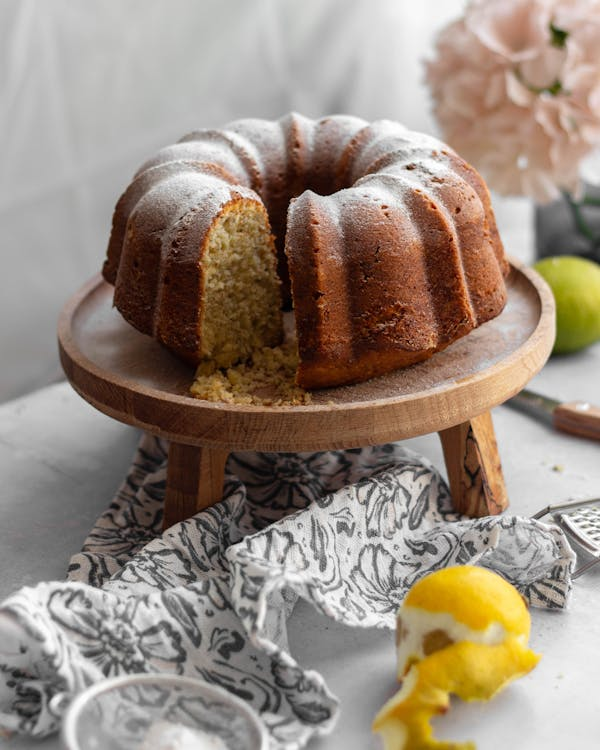

Lemon Cake

Best lemon cake ever
You will not believe how easy it is to makethis delicious lemon cake!
You will only need a few ingredients that you probably already have in your kitchen.
Ingredients
- 1 cup white sugar
- 1 cup unsalted butter, slightly softened
- 4 large eggs
- 1 ¾ cups self-rising flour
- 1 teaspoon baking powder (Optional)
- 1 medium lemon, zested
Lemon glaze
- 1 medium lemon, zested and juiced
- 7 tablespoons white sugar, or to taste
Steps
- Preheat the oven to 350 degrees F (175 degrees C). Line a loaf pan with parchment paper.
- Beat sugar and butter together in a large bowl with an electric mixer until light and fluffy. Add eggs one at a time, beating well after each addition. Sift in flour and baking powder gradually; fold with a wooden spoon to be sure flour is combined. Stir in lemon zest.
- Pour batter into the prepared pan, being careful not to press it down.
- Bake in the preheated oven until a toothpick inserted into the center comes out clean, about 45 minutes. Try not to open the oven door early to avoid collapsing the fluffy cake.
- Meanwhile, make the lemon glaze: Juice the zested lemon from the cake batter into a small bowl. Add zest and juice of second lemon. Stir in sugar until dissolved; taste and add more sugar or lemon juice to suit your taste.
- Drizzle glaze over the warm cake and leave to cool in the pan; glaze will harden as the cake cools.